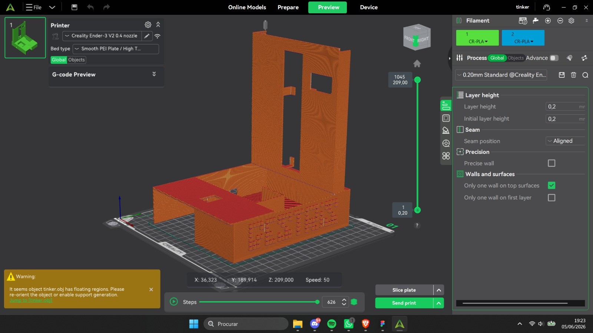
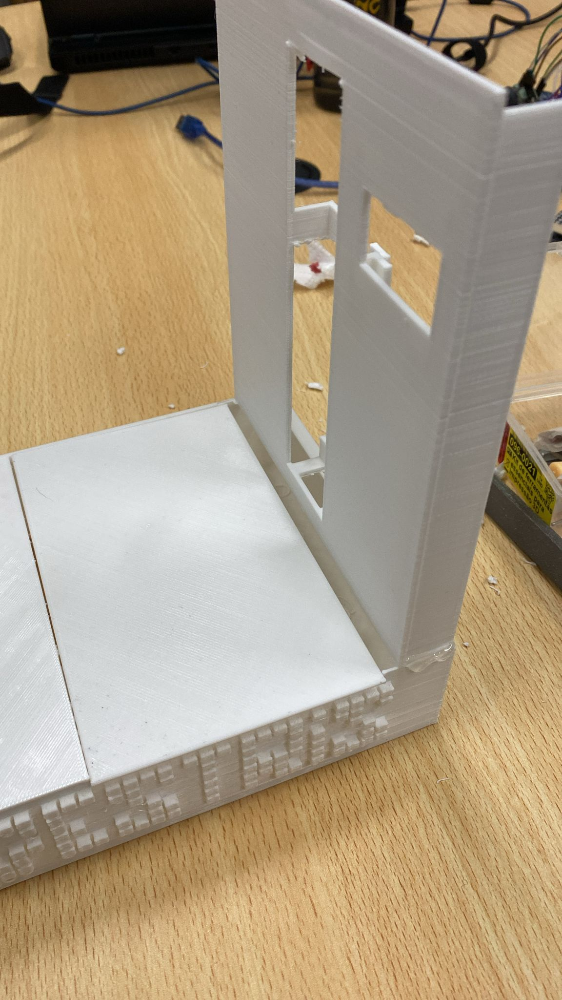
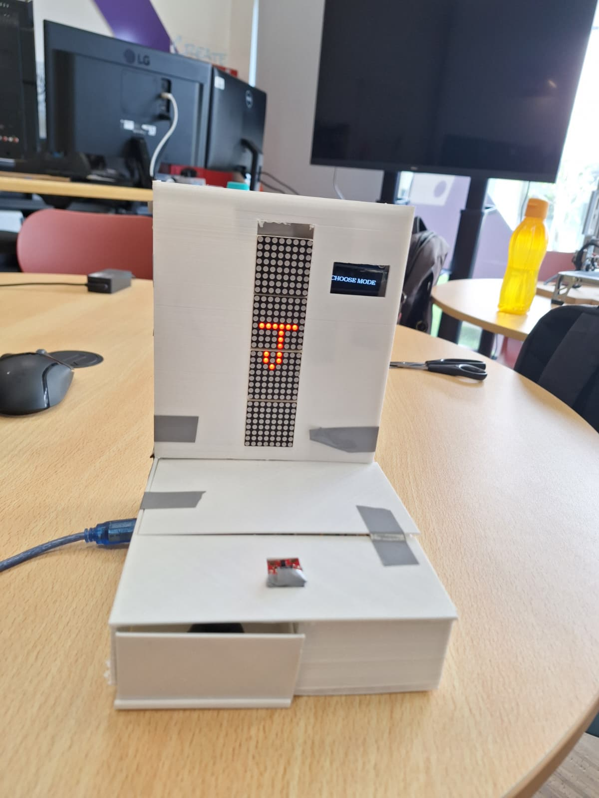
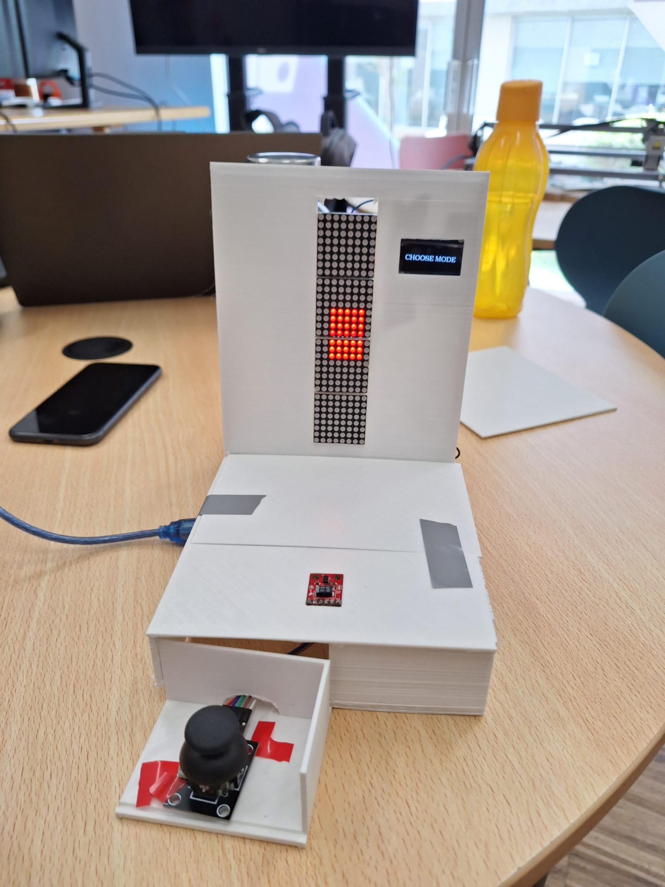

Gestris is a physical reinterpretation of Tetris built using Arduino, Processing, and a custom 3D-printed enclosure. The experience brings the classic arcade game into the physical world, offering dual-mode control via a precise analog hardware joystick or a contactless gesture motion sensor.
The project explores physical computing and human-computer interaction by bridging custom hardware with digital game engines. A dedicated microcontroller processes real-time sensor inputs and communicates via serial communication with a Processing application, ensuring minimal input latency and responsive block control.
From digital 3D CAD modeling to physical soldering, component integration, and iterative usability testing, Gestris combines tangible arcade aesthetics with modern embedded prototyping.
Digital Enclosure Design

Production & Assembly Matrix


